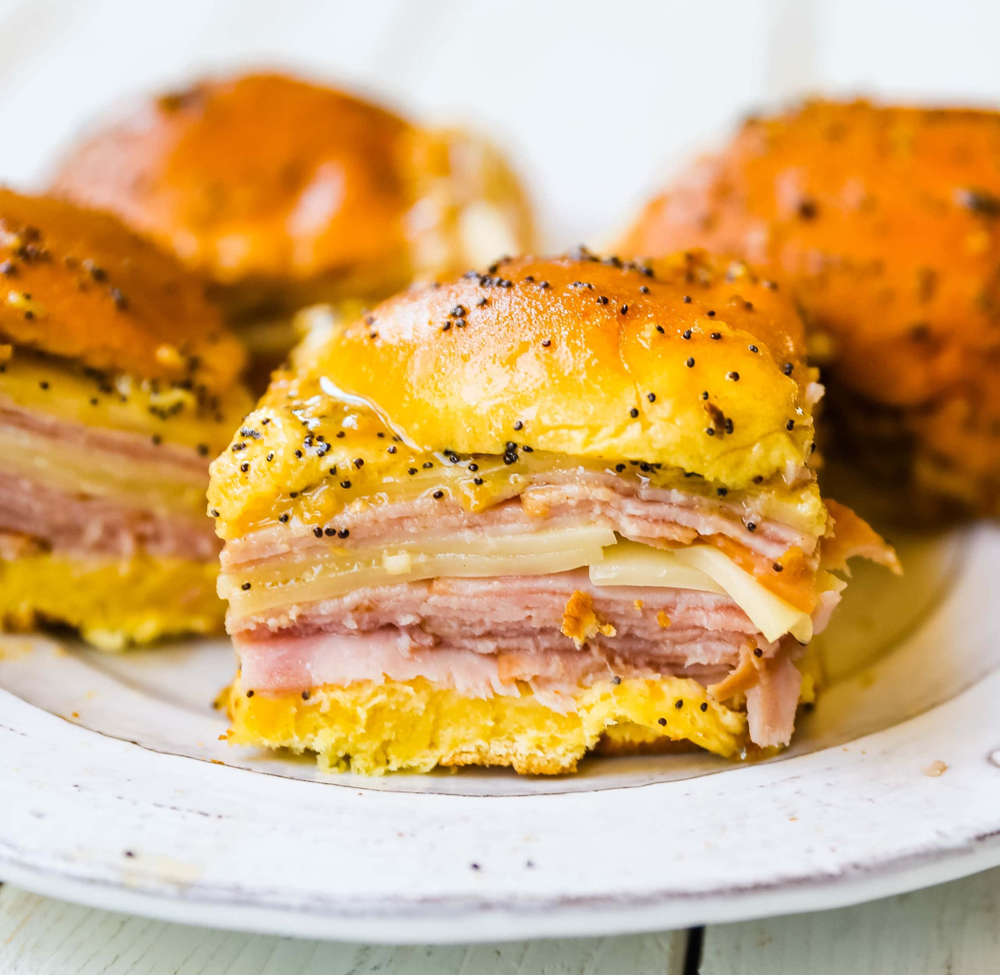

Ham and Cheese Sliders

Not your plain Ham and Cheese sliders!
These sliders and baked using sweet Hawaiian rolls and brushed with Dijon mustard and poppy seed topping. Fast and Delicious!
Ingredients
- 48 slices of deli ham
- 6 slices of Swiss cheese cut into fourths
- 1 tbsp
- 1 1/2 tbsp of Dijon mustard
- 1/2 cup of melted butter
- 1/2 tsp Worcestershire sauce
- 1 tbsp onion powder
- 24 count Hawaiian sweet rolls
Steps
- Cut your rolls in half. Place 2 slices of Ham and 1 slice of Swiss cheese in the rolls.
- In a medium sized bowl, whisk Poppy Seeds, Dijon mustard, melted butter, onion powder, and Worcestershire sauce together.
- Cover your rolls in the sauce that you mixed together. Cover them with foil, and let sit for 10 minutes.
- Bake at 350 degrees for 10 minutes.
- Serve!